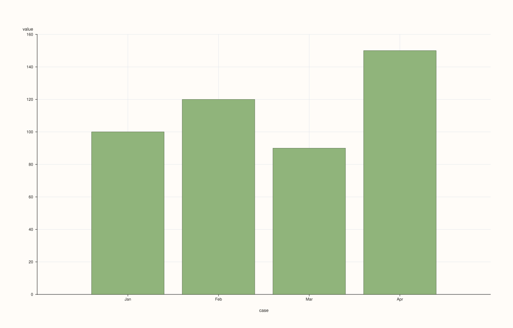
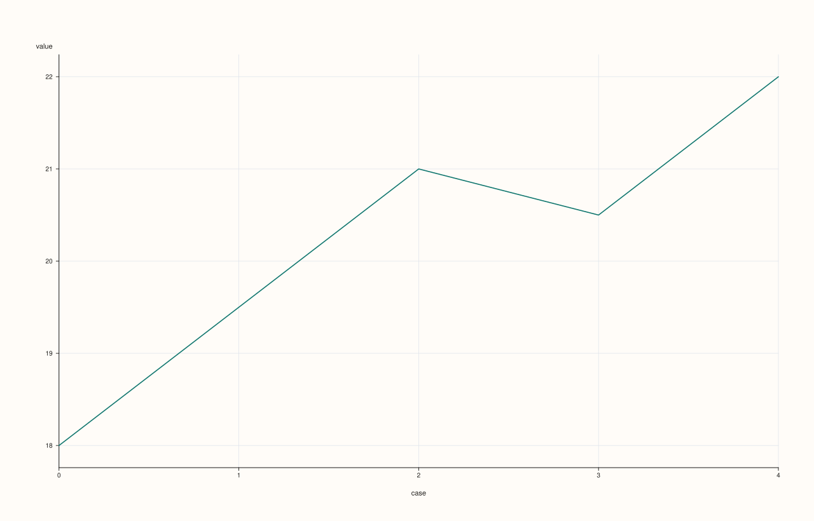
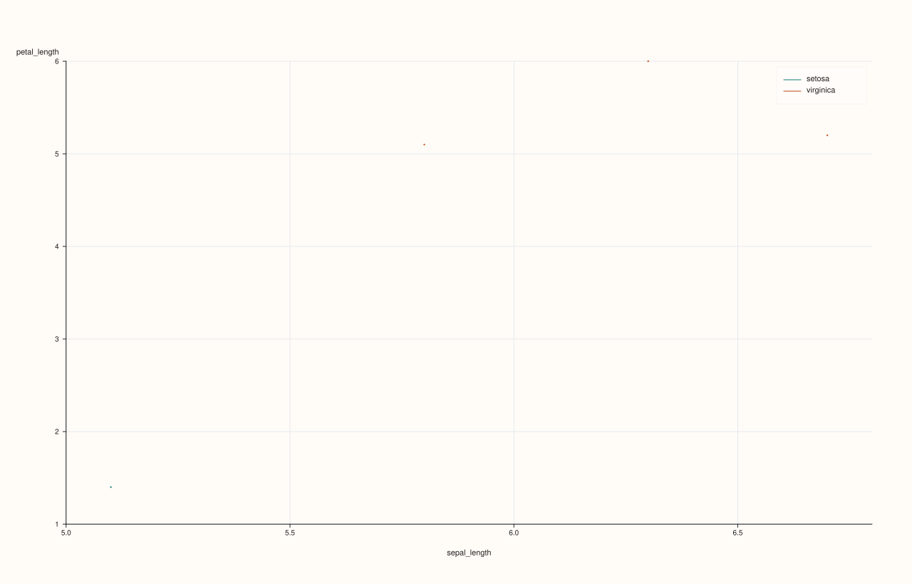
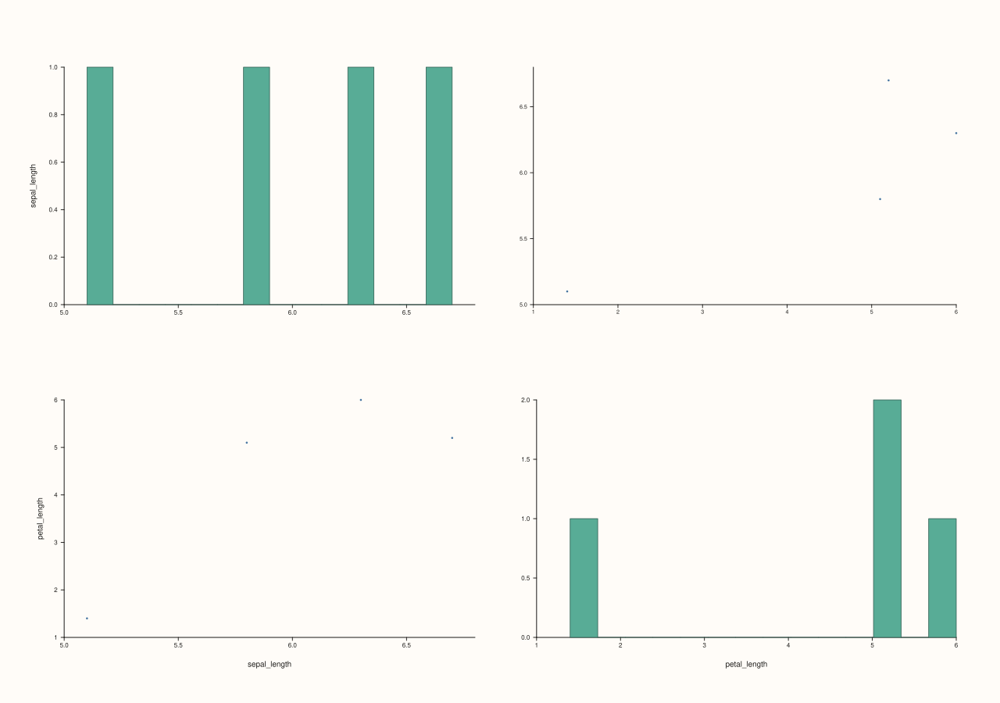
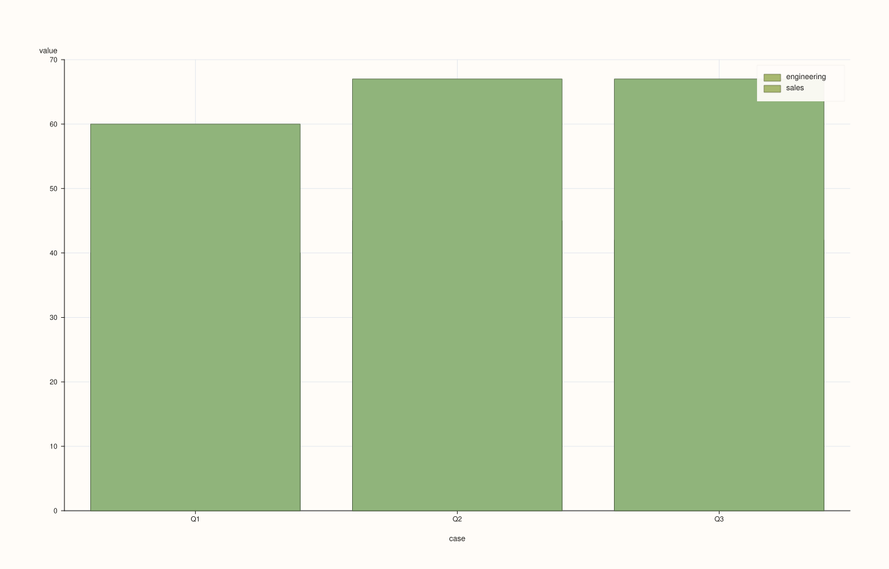
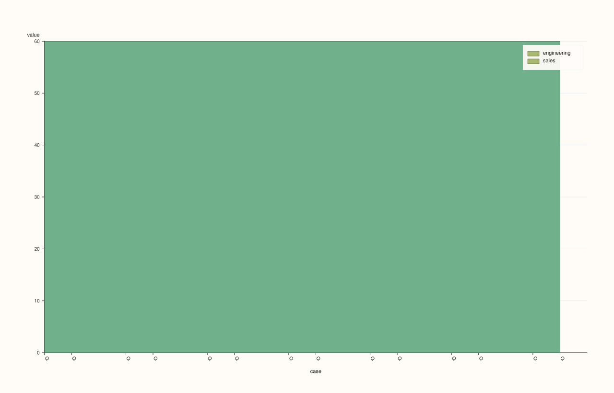
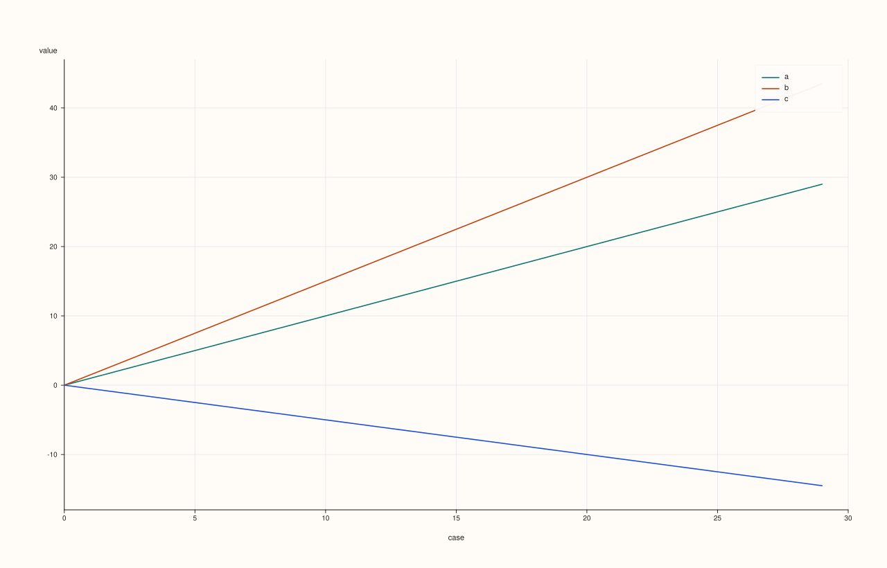
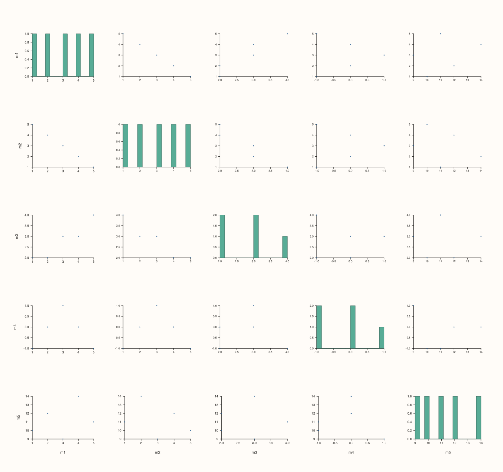
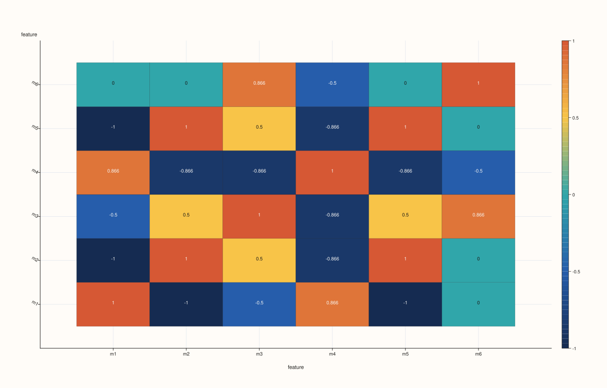

DataFramePlotAccessor::auto_plot¶
Back to DataFramePlotAccessor API Reference
Signatures¶
DataFramePlotAccessor::auto_plot(
pluss::msharp::RangeView::Of<std::string_view> features = {}) const -> pluss::pl::Studio
DataFramePlotAccessor::auto_plot(
pluss::msharp::RangeView::Of<std::string_view> features,
const AutoPlotOptions& options) const -> pluss::pl::Studio
What It Does¶
Picks a chart type automatically for the requested (or inferred) numeric features and
delegates to the corresponding method on this same accessor — auto_plot() never draws
anything itself; every branch ends by calling straight into bar(), line(), scatter(),
bar_stacked(), area_stacked(), scatter_matrix(), or corr_heatmap(). The routing is a
fully deterministic decision tree based on how many numeric features resolve, whether the
frame’s row labels are categorical/temporal, how many rows the frame has, whether a
hue-capable feature exists, and whether every selected column is non-negative. It exists for
quick, exploratory looks at a frame without having to pick a chart type by hand — for
anything beyond “show me something reasonable,” reach for the specific method directly
instead.
The two-argument overload’s AutoPlotOptions is currently an empty struct (reserved for
future use) — it has no effect on routing or rendering today; both overloads behave
identically.
Feature resolution follows the same rule as box(): empty (default) features
infers every numeric feature in the frame, and an explicitly-passed non-numeric name throws
— see box()’s important callout for the exact rule and throw text.
Important
The decision tree, in order
Given the resolved feature names (names) and whether features was passed non-empty
(explicit_features), the first matching rule below wins:
Exactly one numeric feature. If the frame’s row-label thread is Note-, Timeline-, or TimeIndex-kind (“labeled”) and the frame has 16 or fewer rows, routes to
bar(names.front()). Otherwise routes toline(names.front()).Exactly two numeric features, and
featureswas left empty/default. If the frame has any Note/Timeline/TimeIndex-kind feature (checked across the whole frame, not just the two selected numeric ones), routes toscatter(names[0], names[1], hue)using the first such feature (in the frame’s own column order) as the hue. This rule is skipped entirely — even with the same two resolved features — whenfeatureswas passed explicitly rather than left empty.Two or three numeric features, labeled row axis, and every selected column non-negative (non-finite cells treated as
0for this check only). If the frame has 12 or fewer rows, routes tobar_stacked()over the selected features; otherwise routes toarea_stacked().Two, three, or four numeric features, and the frame “prefers an index plot” — true when the row-label thread is labeled-kind, or the frame has more than 24 rows (either condition alone is enough). Routes to
line()with all selected features asy_features.Five or fewer numeric features, and 256 or fewer rows. Routes to a scatter-matrix view equivalent to
scatter_matrix(names)with default options (Fulltriangle).Everything else (more than five features, or too many rows for step 5 to apply). Routes to a correlation-heatmap view equivalent to
corr_heatmap(names)with default options.
Parameters¶
features (RangeView<std::string_view>, default {})
Numeric features to consider. Empty (the default) infers every numeric feature in the
frame — see box()’s important callout for the exact rule. Whether this
argument was left empty or passed explicitly also affects routing directly (rule 2
above only fires for the default/empty case).
options (AutoPlotOptions)
cpp struct AutoPlotOptions {};
Currently empty; reserved for future routing controls.
Returns¶
pluss::pl::Studio
Whatever the routed-to method returns — the figure shape (pane count, trace kind, axis
labels) depends entirely on which rule fired.
Examples¶
Example 1. One numeric feature, labeled (Note-kind) row axis, few rows: routes to bar().
using namespace pluss::table;
auto monthly = DataFrame({
{"revenue", Thread(pluss::make_series({100.0, 120.0, 90.0, 150.0}))},
}, Thread(pluss::make_note({"Jan", "Feb", "Mar", "Apr"})));
auto chart = monthly.plot().auto_plot();
chart.show();
Row labels are Note-kind and there are only 4 rows (≤ 16), so this is equivalent to
monthly.plot().bar("revenue").

Example 2. One numeric feature, default (numeric) row axis: routes to line().
auto trend = DataFrame({
{"temperature", Thread(pluss::make_series({18.0, 19.5, 21.0, 20.5, 22.0}))},
});
auto chart = trend.plot().auto_plot();
chart.show();
No row labels were provided, so trend’s row axis defaults to a plain numeric case index
(not labeled-kind) — this is equivalent to trend.plot().line("temperature").

Example 3. Two numeric features (default/empty features), with a hue-capable feature
elsewhere in the frame: routes to scatter() with that feature as hue.
auto flowers = DataFrame({
{"sepal_length", Thread(pluss::make_series({5.1, 6.7, 5.8, 6.3}))},
{"petal_length", Thread(pluss::make_series({1.4, 5.2, 5.1, 6.0}))},
{"species", Thread(pluss::make_note({"setosa", "virginica", "virginica", "virginica"}))},
});
auto chart = flowers.plot().auto_plot();
chart.save_pdf("flowers_auto.pdf");
species is the only Note/Timeline/TimeIndex-kind feature in the frame, and features was
left at its default empty value, so this is equivalent to
flowers.plot().scatter("sepal_length", "petal_length", "species").

Example 4. The same two numeric features, but requested explicitly: the hue-scatter rule is
skipped even though species still exists.
auto chart = flowers.plot().auto_plot({"sepal_length", "petal_length"});
Because features was passed non-empty this time, rule 2 never fires — routing falls
through to rule 3 (labeled row axis check) or beyond, exactly as if species didn’t exist
for hue-selection purposes. (flowers has no explicit row labels here, so its row axis is
the default numeric index, and this particular example actually falls all the way through
to rule 5’s scatter-matrix fallback.)

Example 5. Two non-negative features, labeled row axis, few rows: routes to bar_stacked().
auto budget = DataFrame({
{"engineering", Thread(pluss::make_series({40.0, 45.0, 42.0}))},
{"sales", Thread(pluss::make_series({20.0, 22.0, 25.0}))},
}, Thread(pluss::make_note({"Q1", "Q2", "Q3"})));
auto chart = budget.plot().auto_plot();
chart.show();
Both features are all-nonnegative, the row axis is labeled, and there are only 3 rows
(≤ 12) — equivalent to budget.plot().bar_stacked({"engineering", "sales"}).

Example 6. The same shape but with more than 12 rows: routes to area_stacked() instead.
std::vector<double> eng(20, 40.0), sales(20, 20.0);
auto wide_budget = DataFrame({
{"engineering", Thread(pluss::make_series(eng))},
{"sales", Thread(pluss::make_series(sales))},
}, Thread(pluss::make_note(std::vector<std::string>(20, "Q"))));
auto chart = wide_budget.plot().auto_plot();
Still all-nonnegative and labeled, but now 20 rows (> 12) — equivalent to
wide_budget.plot().area_stacked({"engineering", "sales"}).

Example 7. Three numeric features, no labeled axis, more than 24 rows: routes to a
multi-feature line().
std::vector<double> a, b, c;
for (int i = 0; i < 30; ++i) {
a.push_back(static_cast<double>(i));
b.push_back(static_cast<double>(i) * 1.5);
c.push_back(static_cast<double>(i) * -0.5);
}
auto series = DataFrame({
{"a", Thread(pluss::make_series(a))},
{"b", Thread(pluss::make_series(b))},
{"c", Thread(pluss::make_series(c))},
});
auto chart = series.plot().auto_plot();
chart.show();
No row labels (default numeric index) but 30 rows (> 24) makes prefer_index_plot() true
regardless; 3 features fits within rule 4’s ≤ 4 cap — equivalent to
series.plot().line({"a", "b", "c"}).

Example 8. Five numeric features, few rows, no other rule matching first: routes to a scatter-matrix.
auto metrics = DataFrame({
{"m1", Thread(pluss::make_series({1.0, 2.0, 3.0, 4.0, 5.0}))},
{"m2", Thread(pluss::make_series({5.0, 4.0, 3.0, 2.0, 1.0}))},
{"m3", Thread(pluss::make_series({2.0, 2.0, 3.0, 3.0, 4.0}))},
{"m4", Thread(pluss::make_series({-1.0, 0.0, 1.0, 0.0, -1.0}))},
{"m5", Thread(pluss::make_series({10.0, 12.0, 9.0, 14.0, 11.0}))},
});
auto chart = metrics.plot().auto_plot();
chart.show();
5 features (at rule 5’s ≤ 5 boundary) and 5 rows (well within ≤ 256) — equivalent to
metrics.plot().scatter_matrix({"m1", "m2", "m3", "m4", "m5"}). (m4 contains negative
values, which would have disqualified rules 3 and 4 anyway even at a smaller feature count.)

Example 9. More than five numeric features: routes to a correlation heatmap.
auto wide_metrics = DataFrame({
{"m1", Thread(pluss::make_series({1.0, 2.0, 3.0}))},
{"m2", Thread(pluss::make_series({3.0, 2.0, 1.0}))},
{"m3", Thread(pluss::make_series({2.0, 3.0, 1.0}))},
{"m4", Thread(pluss::make_series({1.0, 1.0, 2.0}))},
{"m5", Thread(pluss::make_series({4.0, 3.0, 2.0}))},
{"m6", Thread(pluss::make_series({0.0, 1.0, 0.0}))},
});
auto chart = wide_metrics.plot().auto_plot();
chart.save_pdf("wide_metrics_auto.pdf");
6 features exceeds rule 5’s ≤ 5 cap, so routing falls all the way to the final rule —
equivalent to wide_metrics.plot().corr_heatmap({"m1", ..., "m6"}).

Example 10. A non-numeric feature name in an explicit request throws, same as
box().
auto tagged = DataFrame({
{"revenue", Thread(pluss::make_series({100.0, 120.0, 90.0}))},
{"region", Thread(pluss::make_note({"East", "West", "East"}))},
});
try {
auto bad = tagged.plot().auto_plot({"revenue", "region"});
} catch (const std::exception& e) {
std::cout << e.what();
}
Output¶
DataFrame::plot().auto_plot: feature 'region' is not a numeric Series
Notes¶
Every branch delegates to another method on this same accessor —
auto_plot()performs no rendering of its own.Rule 2 (hue scatter) only fires when
featuresis left at its empty default; an explicit two-feature request skips straight past it.AutoPlotOptionsis currently empty and has no effect.Empty (default)
featuresinfers every numeric feature — seebox()’s important callout for the exact rule.Returns a
pluss::pl::Studio— seeline()’s important callout for how to view or save the result.
See Also¶
DataFramePlotAccessor::brief: a fixed textual summary instead of an automatically chosen chart type.Every method named in the decision tree above (
bar,line,scatter,bar_stacked,area_stacked,scatter_matrix,corr_heatmap): the actual chart-drawing methodsauto_plot()delegates to.